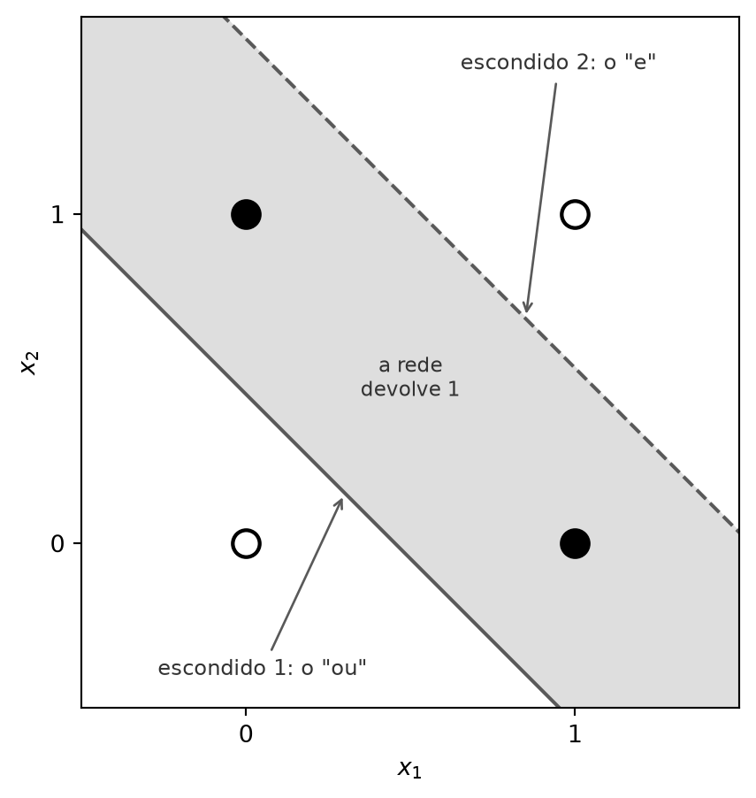

from typing import List
from scratch.linear_algebra import Vector, dot
from scratch.neural_networks import feed_forward
def sqerror_gradients(network: List[List[Vector]],
input_vector: Vector,
target_vector: Vector) -> List[List[Vector]]:
"""
Dada uma rede, um vetor de entrada e um vetor-alvo, faz uma previsão
e calcula o gradiente da perda quadrática em relação aos pesos.
"""
# passada para a frente
hidden_outputs, outputs = feed_forward(network, input_vector)
# gradientes em relação às pré-ativações dos neurônios de saída
output_deltas = [output * (1 - output) * (output - target)
for output, target in zip(outputs, target_vector)]
# gradientes em relação aos pesos dos neurônios de saída
output_grads = [[output_deltas[i] * hidden_output
for hidden_output in hidden_outputs + [1]]
for i, output_neuron in enumerate(network[-1])]
# gradientes em relação às pré-ativações dos neurônios escondidos
hidden_deltas = [hidden_output * (1 - hidden_output) *
dot(output_deltas, [n[i] for n in network[-1]])
for i, hidden_output in enumerate(hidden_outputs)]
# gradientes em relação aos pesos dos neurônios escondidos
hidden_grads = [[hidden_deltas[i] * input for input in input_vector + [1]]
for i, hidden_neuron in enumerate(network[0])]
return [hidden_grads, output_grads]Retropropagação
Nota
Esta seção corresponde a Backpropagation, do capítulo 18 de Grus (2019).
A rede XOR da seção 15.2 foi construída à mão: olhamos para o problema, percebemos que “ou, mas não e” resolve, e escrevemos os pesos que produzem isso. Esse método não escala por dois motivos independentes. O primeiro é tamanho — um problema de reconhecimento de imagens envolve centenas ou milhares de neurônios, e ninguém escreve mil vetores de peso à mão. O segundo é pior: na maioria dos problemas não há como raciocinar o que cada neurônio deveria calcular. “E” e “ou” eram atributos óbvios do XOR; não existe o equivalente óbvio para a maior parte das tarefas.
Então, como sempre neste livro, usamos dados. O algoritmo se chama retropropagação, e ele é gradiente descendente — o do Capítulo 5, sem substituições — aplicado a uma função cujos parâmetros estão distribuídos em camadas.
O ciclo tem cinco passos. Dado um conjunto de treino com vetores de entrada e os vetores de saída desejados:
- Rodar
feed_forwardsobre um vetor de entrada, produzindo as saídas de todos os neurônios da rede. - Como conhecemos a saída desejada, calcular uma perda: a soma dos erros ao quadrado.
- Calcular o gradiente dessa perda em relação aos pesos dos neurônios de saída.
- “Propagar” os gradientes e os erros para trás, obtendo os gradientes em relação aos pesos dos neurônios escondidos.
- Dar um passo de gradiente descendente.
Repetido sobre o conjunto inteiro, muitas vezes, até a rede convergir.
O passo 4 é o coração da coisa, e é onde vale gastar o tempo.
O que significa propagar o erro para trás
O problema é este: o neurônio de saída tem um alvo, então dá para dizer o quanto ele errou. Um neurônio escondido não tem alvo nenhum. Ninguém nunca disse a ele qual deveria ser a sua saída. Como atribuir culpa a quem não tem gabarito?
A resposta é a regra da cadeia, e ela tem uma leitura direta. Chame de culpa de um neurônio a quantidade
\[ \delta \;=\; \frac{\partial \text{perda}}{\partial z} \]
onde \(z\) é a soma ponderada que entra na sigmoide daquele neurônio — o quanto a perda mudaria se empurrássemos \(z\) um tiquinho para cima. Três observações, em ordem:
Para um neurônio de saída, a culpa é direta. A perda depende da saída \(o\) por \((o - t)^2\), e a saída depende de \(z\) pela sigmoide. Pela regra da cadeia, a culpa é o produto de dois fatores com significados distintos: \((o - t)\), o quanto o neurônio errou e para que lado; e \(o(1-o)\), a derivada da sigmoide, que mede o quanto aquele neurônio consegue reagir a um empurrão. Um neurônio saturado — saída perto de 0 ou perto de 1 — tem \(o(1-o)\) perto de zero e recebe pouca culpa mesmo estando muito errado, porque mexer nele quase não muda a saída.
A culpa de um peso é a culpa do neurônio vezes a entrada que aquele peso multiplica. Faz sentido: se a entrada que chega por um peso valia 0 naquele exemplo, aquele peso não teve influência nenhuma no resultado, e o gradiente dele é zero. Um peso só é responsável na medida em que a entrada dele estava ligada.
A culpa de um neurônio escondido é emprestada dos que vêm depois dele. Ele não tem alvo, mas a saída dele foi enviada a cada neurônio da camada seguinte, cada um por uma conexão de peso conhecido. Então cada neurônio de saída devolve para trás a sua própria culpa, multiplicada pelo peso da conexão por onde o sinal passou. Somando essas parcelas e multiplicando pela derivada da sigmoide do próprio neurônio escondido, temos a culpa dele.
É daí que vem o nome. O mesmo peso que levou o sinal para a frente traz a culpa de volta. Uma conexão forte transporta muita responsabilidade; uma conexão fraca, pouca. O erro medido na saída é redistribuído para trás, camada a camada, na proporção exata em que cada peso contribuiu para produzi-lo.
O código
Traduzido, isso é uma função só. O feed_forward vem importado de scratch.neural_networks — é o mesmo código da seção 15.2, não uma segunda versão dele.
As quatro seções da função são, na ordem, os três parágrafos acima mais a passada para a frente. output_deltas é a culpa dos neurônios de saída; output_grads distribui essa culpa pelos pesos, multiplicando pela entrada de cada um (hidden_outputs + [1], com o 1 do viés); hidden_deltas é o empréstimo — [n[i] for n in network[-1]] colhe, de todos os neurônios de saída, o peso da conexão que vinha do \(i\)-ésimo escondido; e hidden_grads distribui essa culpa pelos pesos da primeira camada.
A conta, para quem quiser vê-la
A derivação cabe aqui, e não é difícil — só exige cuidado com os índices.
Cuidado com as letras. Desta caixa em diante, \(i\) numera os neurônios de saída e \(h\), os escondidos. O código não faz essa distinção: ele reaproveita a letra i nos dois papéis, porque cada compreensão de lista é um escopo local e ali não há ambiguidade. Em output_grads, o i de output_deltas[i] enumera os neurônios de saída — é o \(i\) desta caixa. Em hidden_deltas e em hidden_grads, o i enumera os escondidos — é o \(h\). E em [n[i] for n in network[-1]] os dois papéis convivem na mesma linha: n percorre os neurônios de saída (o \(i\) daqui) e n[i] indexa, dentro de cada um, o peso da conexão que vem do escondido de índice i (o \(h\) daqui). A matemática precisa de duas letras; o código não, e é essa a fonte da confusão.
Escreva \(z_h\) e \(o_h = \sigma(z_h)\) para a pré-ativação e a saída do \(h\)-ésimo neurônio escondido, e \(z_i\), \(o_i\) para os do \(i\)-ésimo neurônio de saída, com alvo \(t_i\). A perda de um exemplo é
\[ L = \sum_i (o_i - t_i)^2 \]
Para o neurônio de saída \(i\), a regra da cadeia dá
\[ \frac{\partial L}{\partial z_i} = \underbrace{\frac{\partial L}{\partial o_i}}_{2(o_i - t_i)} \cdot \underbrace{\frac{\partial o_i}{\partial z_i}}_{o_i(1 - o_i)} \]
usando que \(\sigma' = \sigma(1-\sigma)\) — a propriedade conveniente da logística que o Capítulo 13 já tinha registrado. Como \(z_i = \sum_h v_{ih}\,o_h + v_{i,\text{viés}}\), a derivada em relação a um peso é
\[ \frac{\partial L}{\partial v_{ih}} = \frac{\partial L}{\partial z_i} \cdot o_h \]
que é a culpa do neurônio vezes a entrada que aquele peso multiplica.
Para o neurônio escondido \(h\), a diferença é que \(o_h\) afeta a perda por vários caminhos — um por neurônio de saída — e as contribuições se somam:
\[ \frac{\partial L}{\partial o_h} = \sum_i \frac{\partial L}{\partial z_i} \cdot v_{ih} \qquad\Longrightarrow\qquad \frac{\partial L}{\partial z_h} = o_h(1 - o_h) \sum_i \frac{\partial L}{\partial z_i} \cdot v_{ih} \]
que é exatamente a linha hidden_deltas do código, com \(v_{ih}\) escrito como n[i] — lembrando que ali o i do código é o \(h\) desta caixa, e o \(i\) daqui é quem n percorre. E, de novo, a derivada em relação a um peso da primeira camada é essa culpa vezes a entrada correspondente, \(x_j\).
AvisoO fator 2 que sumiu
Compare a derivação com o código e falta um 2. A conta dá \(\partial L / \partial o_i = 2(o_i - t_i)\); output_deltas calcula output * (1 - output) * (output - target), sem o 2.
Não é um erro, mas o comentário do código também não é preciso ao dizer “o gradiente da perda quadrática”: o que está sendo calculado é o gradiente exato da metade da soma dos quadrados. Como os dois diferem por um fator constante, eles apontam exatamente na mesma direção, e o efeito prático é só o de dobrar ou não a taxa de aprendizado — que é um número escolhido à mão de qualquer forma, como o Capítulo 5 mostrou.
Vale saber disso por um motivo concreto: a seção 15.4 vai imprimir a perda a cada epoch, usando squared_distance, que é a soma dos quadrados inteira. O número acompanhado na tela é, portanto, o dobro daquele cujo gradiente está sendo descido. Para ver a perda cair, dá no mesmo; para conferir uma conta contra a outra, não.
ImportanteEsta implementação só funciona para duas camadas
Olhe a primeira linha do corpo da função: hidden_outputs, outputs = feed_forward(...). Ela desempacota a lista de saídas em exatamente dois nomes.
Uma rede com três camadas faria essa linha estourar com ValueError, e uma com uma camada só também. network[0] e network[-1] aparecem no resto do código pelo mesmo motivo: são “a primeira” e “a última”, e a função supõe que não há nada entre elas.
Isso não é descuido; é o custo de escrever a retropropagação à mão para uma arquitetura específica. Cada nova topologia exigiria uma nova função. O Capítulo 16 existe em grande parte para resolver isso: lá, cada camada saberá propagar o gradiente através de si mesma, e redes de qualquer profundidade se montam encaixando camadas.
Treinando o XOR
Vamos aprender a rede XOR que a seção anterior escreveu à mão. Começamos com os dados de treino — quatro exemplos, o problema inteiro — e uma rede de pesos aleatórios:
import random
random.seed(0)
# dados de treino
xs = [[0., 0], [0., 1], [1., 0], [1., 1]]
ys = [[0.], [1.], [1.], [0.]]
# começamos com pesos aleatórios
network = [ # camada escondida: 2 entradas -> 2 saídas
[[random.random() for _ in range(2 + 1)], # 1º neurônio escondido
[random.random() for _ in range(2 + 1)]], # 2º neurônio escondido
# camada de saída: 2 entradas -> 1 saída
[[random.random() for _ in range(2 + 1)]] # 1º neurônio de saída
]
[[round(w, 4) for w in neuron] for layer in network for neuron in layer][[0.8444, 0.758, 0.4206], [0.2589, 0.5113, 0.4049], [0.7838, 0.3033, 0.4766]]Nove números entre 0 e 1: três para cada um dos dois neurônios escondidos e três para o de saída, contando o viés de cada um. É só isso que a rede sabe antes de ver o primeiro exemplo. Guarde a ordem de grandeza — ao fim desta seção, esses mesmos nove números estarão nas unidades e nas dezenas, e vários terão trocado de sinal.
O random.seed(0) fixa a inicialização, e aqui isso pesa mais do que em outros capítulos: o treino de uma rede depende do ponto de partida de um jeito que uma regressão não depende, e duas inicializações diferentes podem levar a soluções diferentes, não só a arredondamentos diferentes — a seção 15.4 mostra um caso em que a rede fica presa por dezenas de epochs antes de escapar.
Antes do treino, vale ver uma única passada para trás, sobre um exemplo só. A entrada \([1, 0]\) deveria produzir 1; a rede aleatória produz outra coisa, e daí sai a culpa de cada neurônio:
hidden_outputs, outputs = feed_forward(network, [1., 0])
output_deltas = [o * (1 - o) * (o - t) for o, t in zip(outputs, [1.])]
hidden_deltas = [h * (1 - h) * dot(output_deltas, [n[i] for n in network[-1]])
for i, h in enumerate(hidden_outputs)]
print(f"saída {outputs[0]:.4f} (alvo 1) culpa {output_deltas[0]:+.6f}")
for i, (h, d) in enumerate(zip(hidden_outputs, hidden_deltas)):
print(f"escondido {i+1} {h:.4f} peso p/ a saída {network[-1][0][i]:.4f}"
f" culpa {d:+.6f}")saída 0.7838 (alvo 1) culpa -0.036630
escondido 1 0.7799 peso p/ a saída 0.7838 culpa -0.004929
escondido 2 0.6601 peso p/ a saída 0.3033 culpa -0.002493Três coisas para ver aí, e é para vê-las que vale interromper o texto. A primeira: as três culpas são negativas, porque a rede respondeu abaixo do alvo, e é o mesmo erro sendo redistribuído — o sinal não se inverte no caminho de volta. A segunda: as culpas escondidas são uma ordem de grandeza menores que a da saída. Elas são o produto da culpa de trás por um peso menor que 1 e pela derivada da sigmoide, que vale no máximo 0,25 — a culpa encolhe a cada camada que atravessa, e essa é a versão em miniatura do problema que trava redes profundas.
A terceira é a proporcionalidade da metáfora: o primeiro escondido manda o sinal à saída por um peso de cerca de 0,78 e o segundo por um de cerca de 0,30 — dois e meio para um —, e o primeiro recebe cerca do dobro da culpa do segundo. Não exatamente dois e meio, porque cada um ainda multiplica pela própria derivada, e o segundo, mais perto do meio da sigmoide, reage mais a um empurrão. Conexão forte, muita responsabilidade; conexão fraca, pouca — moderado pelo quanto cada neurônio consegue reagir.
O treino é gradiente descendente estocástico: o laço interno percorre os exemplos um a um e dá um passo em cada, que é a variante batizada na seção 5.6. Vinte mil epochs sobre quatro exemplos são, portanto, 80.000 passos de gradiente, não 20.000. A outra diferença em relação aos capítulos anteriores é que agora há vários vetores de parâmetros, cada um com o seu gradiente, então gradient_step é chamado uma vez por neurônio a cada passo:
from scratch.gradient_descent import gradient_step
import tqdm
learning_rate = 1.0
for epoch in tqdm.trange(20000, desc="rede neural para o xor"):
for x, y in zip(xs, ys):
gradients = sqerror_gradients(network, x, y)
# um passo de gradiente para cada neurônio de cada camada
network = [[gradient_step(neuron, grad, -learning_rate)
for neuron, grad in zip(layer, layer_grad)]
for layer, layer_grad in zip(network, gradients)]
# conferimos que ela aprendeu o XOR
assert feed_forward(network, [0, 0])[-1][0] < 0.01
assert feed_forward(network, [0, 1])[-1][0] > 0.99
assert feed_forward(network, [1, 0])[-1][0] > 0.99
assert feed_forward(network, [1, 1])[-1][0] < 0.01Vinte mil epochs sobre quatro exemplos custam menos de um segundo. O tqdm.trange desenha a barra de progresso do Capítulo 7.
Os assert passaram, então a rede aprendeu. Vale ver com quanta folga:
for x in xs:
print(f"{x} -> {feed_forward(network, x)[-1][0]:.6f}")[0.0, 0] -> 0.009034
[0.0, 1] -> 0.992329
[1.0, 0] -> 0.992328
[1.0, 1] -> 0.007856A simetria não é acidente
Olhe os dois valores do meio: 0,992329 e 0,992328. Eles concordam até a quinta casa decimal, e isso não é coincidência numérica.
O XOR é simétrico nos seus dois argumentos: trocar a primeira entrada pela segunda não muda a resposta. Os dados de treino não distinguem \([0,1]\) de \([1,0]\) de forma nenhuma, e o gradiente que chega ao peso da primeira entrada é praticamente o espelho do que chega ao peso da segunda — seria exatamente o espelho se os dois pesos já fossem iguais. Como a inicialização foi aleatória, os dois pesos não começaram iguais — mas foram empurrados quase igualmente durante 20.000 epochs, e a diferença inicial praticamente se dissolveu.
Cuidado com o que a simetria não diz. Ela relaciona \([0,1]\) com \([1,0]\), porque um é a troca do outro. Já \([0,0]\) e \([1,1]\) são cada um a troca de si mesmo, e nada obriga que tenham a mesma saída: de fato, 0,009034 e 0,007856 diferem na terceira casa. Os dois estão perto de zero porque o alvo dos dois é zero, o que é uma razão diferente.
O que a rede aprendeu
A parte mais interessante é abrir os pesos:
nomes = ["escondido 1", "escondido 2", "saída "]
neuronios = [n for layer in network for n in layer]
for nome, neuron in zip(nomes, neuronios):
exatos = ", ".join(f"{w:8.4f}" for w in neuron)
arredondados = ", ".join(f"{round(w):3d}" for w in neuron)
print(f"{nome} [{exatos}] -> [{arredondados}]")escondido 1 [ 6.9535, 6.9528, -3.1485] -> [ 7, 7, -3]
escondido 2 [ 5.1159, 5.1154, -7.8396] -> [ 5, 5, -8]
saída [ 10.9617, -11.6306, -5.1442] -> [ 11, -12, -5]Arredondados, os pesos aprendidos são \([7, 7, -3]\), \([5, 5, -8]\) e \([11, -12, -5]\). Não há nada de especial nesses nove números: eles saem do random.seed(0) lá de cima. Mesmo código e mesma semente devolvem sempre estes; bastaria uma semente diferente para todos mudarem.
Repare também na simetria dentro de cada neurônio escondido: 6,9535 e 6,9528 no primeiro, 5,1159 e 5,1154 no segundo. É a mesma simetria da caixa acima, agora visível nos parâmetros em vez das saídas.
E o que esses neurônios calculam?
for x in xs:
escondida, saida = feed_forward(network, x)
print(f"{x} -> escondida [{escondida[0]:.4f}, {escondida[1]:.4f}]"
f" saída {saida[0]:.4f}")[0.0, 0] -> escondida [0.0412, 0.0004] saída 0.0090
[0.0, 1] -> escondida [0.9782, 0.0616] saída 0.9923
[1.0, 0] -> escondida [0.9782, 0.0616] saída 0.9923
[1.0, 1] -> escondida [1.0000, 0.9162] saída 0.0079O primeiro neurônio escondido está perto de 1 nas três últimas linhas: ele calcula o OU. O segundo só chega perto de 1 na última: ele calcula o E. E o neurônio de saída, com pesos \([11, -12, -5]\), dispara quando o primeiro está ligado e o segundo não — “o primeiro mas não o segundo”, ou seja, “ou, mas não e”.
Duas retas, e não uma
A seção 15.1 desenhou exatamente estes quatro pontos e parou numa impossibilidade: nenhuma reta deixa os dois preenchidos de um lado e os dois vazios do outro. Cada neurônio escondido é uma reta — foi a primeira coisa que aquela seção estabeleceu —, então desenhar as duas que a rede acabou de aprender responde à pergunta que ela deixou em aberto:

As duas retas cortam o quadrado em três faixas, e a leitura vai de baixo para cima:
- Abaixo da reta cheia, nenhum dos dois neurônios escondidos disparou. É onde mora \([0,0]\), e a rede devolve 0.
- Na faixa cinza, o “ou” já disparou e o “e” ainda não. É onde moram \([0,1]\) e \([1,0]\), e a rede devolve 1.
- Acima da reta tracejada, os dois dispararam. É onde mora \([1,1]\), e a rede devolve 0 de novo.
Repare que as duas retas saíram quase paralelas. Não é acaso: os dois pesos de cada neurônio escondido são praticamente iguais entre si — 6,9535 e 6,9528 no primeiro, 5,1159 e 5,1154 no segundo —, e uma reta \(w x_1 + w x_2 + b = 0\) com pesos iguais tem inclinação \(-1\), seja qual for \(w\). O que separa uma reta da outra é só o viés, que a empurra para mais longe da origem. É exatamente a observação que a seção 15.1 fez ao passar da porta E para a porta OU mexendo apenas no viés — e a rede, sem que ninguém lhe dissesse nada, redescobriu aquele par de retas.
E o neurônio de saída não faz mais nada além de nomear a faixa do meio. “Dispara quando o primeiro está ligado e o segundo não” é, geometricamente, “está acima da reta cheia e abaixo da tracejada”.
É esse o negócio que uma camada escondida oferece, na forma mais nua que este livro consegue mostrar: a possibilidade de recortar uma região entre duas fronteiras, em vez de ter que escolher um lado de uma só. Um perceptron sozinho tem uma reta e dois lados, e acabou. Dois neurônios escondidos têm duas retas, e o neurônio de saída pode pedir qualquer combinação dos pedaços que elas produzem — inclusive a faixa do meio, que não é “um lado” de reta nenhuma. Mais neurônios escondidos recortam regiões mais elaboradas; mais camadas passam a recortar regiões de regiões. A seção 15.4 vai usar 25 neurônios escondidos sobre dez dimensões, onde não há figura possível — e é justamente por isso que vale ter visto esta.
A rede treinada encontrou os mesmos dois atributos que escolhemos à mão na seção anterior — o “e” e o “ou” — mas na ordem trocada: lá o primeiro neurônio escondido era o “e”, aqui é o “ou”.
Isso é a primeira aparição de algo que a próxima seção leva ao extremo. Nada no algoritmo pediu “e” e “ou”; nada fixou qual neurônio ficaria com qual. A rede tem várias soluções equivalentes, e a que ela encontra depende de onde a inicialização aleatória a colocou. Trocar os dois neurônios escondidos de lugar (e trocar junto os dois pesos correspondentes na saída) produz uma rede que calcula exatamente a mesma função.
Neste exemplo minúsculo os pesos ainda contam uma história legível, porque o problema tinha dois atributos óbvios e a rede tinha exatamente dois neurônios para descobri-los. Guarde a raridade disso: já na seção 15.4, com vinte e cinco neurônios escondidos, a leitura direta acaba — o que sobra lá é procurar estrutura com uma hipótese na mão.
DicaNa prática: derivar gradientes à mão acabou
Duas coisas ficam por conta da biblioteca aqui, e elas são de naturezas diferentes.
A primeira é o modelo. Este mesmo experimento, com o scikit-learn:
from sklearn.neural_network import MLPClassifier
rede = MLPClassifier(hidden_layer_sizes=(2,), activation='logistic',
solver='lbfgs', random_state=0, max_iter=5000)
rede.fit([[0, 0], [0, 1], [1, 0], [1, 1]], [0, 1, 1, 0])
rede.predict([[0, 0], [0, 1], [1, 0], [1, 1]])Rodando isso (scikit-learn 1.9), a rede acerta os quatro pontos. Repare no solver='lbfgs': não é gradiente descendente simples, é um método quase-Newton que usa informação de curvatura — uma das muitas variantes que existem porque descer o gradiente puro, como fazemos aqui, costuma ser lento demais em problemas grandes.
A segunda é mais profunda, e é a que mudou a área. Ninguém deriva sqerror_gradients à mão hoje. As bibliotecas de rede neural — PyTorch, TensorFlow, JAX — implementam diferenciação automática em modo reverso, que faz exatamente a contabilidade desta seção, só que genérica: cada operação elementar sabe propagar a derivada através de si mesma, e o gradiente de qualquer composição delas sai por aplicação repetida da regra da cadeia, na ordem inversa da execução. Você escreve a passada para a frente; a passada para trás é derivada do grafo de operações.
É por isso que a retropropagação vale como conceito e quase nunca como código escrito à mão. E é exatamente a abstração que o Capítulo 16 constrói, em pequeno: uma Layer que sabe fazer forward e backward, e uma rede que é só uma sequência delas.
Grus, Joel. 2019. Data Science from Scratch: First Principles with Python. 2nd ed. O’Reilly Media.